First two weeks - June 9 to June 22, 2015
Day 1 - Leaving Banff was the easy part.
Those hills didn't look so steep in the pictures
9:59AM, 6h48m, 62.4 miles, 4,814 ft of climbing
The ride begins

After two hours I had covered 12 miles.
Some quick extrapolation and it appeared I was going to finish 2,700 miles in October.
Montains all around

30 miles - slow going

-

End of day 1

So after a relatively good day I was presented with my first real issues.
• One of my "notube" tires was pretty flat,
• I was getting eaten by mosquitoes
• And when I had stopped to take a shower I had left my bike helmet by the bathroom.
• One of my "notube" tires was pretty flat,
• I was getting eaten by mosquitoes
• And when I had stopped to take a shower I had left my bike helmet by the bathroom.
Day 2 - Tires and Helmets
First Divide pass and a shaky set of tires
7:10am, 9h48m, 52.3 miles, 2,490 ft of climbing


Day 3 - Fixing the Bike and shedding gear
Another short ride and then some maintenance
7:16am, 3h30m, 30.7 miles, 1,562 ft of climbing


Day 04 - Stream or Trail??
Two passes then "...shooting guns and blowing stuff up"
7:02am, 7h56m, 72.8 miles, 4,557 ft of climbing
Road to Corbin mostly along side a railroad track.

Corbin is an old vacant town right next to a coal mine.

At the bottom of Flathead Valley Road - now the climbing begins

It took my quite a while to figure out that this was the trail and not a stream. Turns out it was both

Looking back up the "stream"

Day 5 - Cabin Pass, The Wall (WTF) and Galton Pass
Last day in Canada and it's a good one
7:39am, 7h40m, 59.8 miles, 4,548 ft of climbing
Slept up on Cabin Pass in rain and some snow
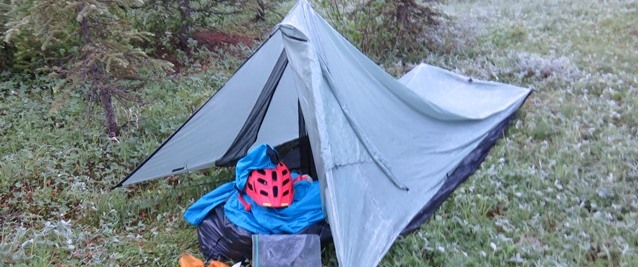
Long hike up to the top
The ride down from Cabin pass was cold and long. Next up was the Wall

The top end of the Wall. Really glad to be thru that.

3 miles from top. Laid my helmet across the handlebars & walked for an hour.

Galton Pass
8 miles downhill and then 5 to the border

Back in the USA
Day 6 - Whitefish Pass and Red Meadow Lake
Now I know why you don't use tubes
5:57am, 10h3m, 94.7 miles, 5,833 ft of climbing
This was a two pass day and then a long trip into Whitefish

The opening in the mountains above was the first pass.
This was the first day I was riding with many others.

Climbing to Whitewish Pass
Lots of false tops. Nice to see everyone walking.

2nd climb to Red Meadow Lake
Red Meadow Lake. Some rain and then a flat tire every 20 mintes. Ughhh!
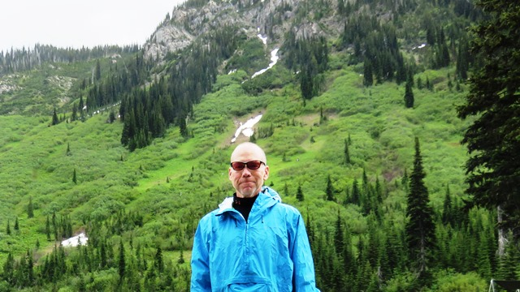
Down off the mountains but still 25 miles to Whitefish.

Day 07 - A flat 40 miles to a nice B&B
A partial rest, laundry and an easy 47 including an extra 4
11:38am, 3h55m, 47.3 miles, 986 ft of climbing


Day 08 - Grizzly Country and climbs just for fun
Tough climbs, a nice ride until washboard - great setting at the end
left at 8:39am, 8h24m, 71.8 miles, 5,697 ft of climbing


Day 9 - Coming around the mountain
Circling Richmond Peak and a huge save
8:45 AM, 8h49m, 60.34 miles, 5,574 ft of climbing
On top of Richmond Peak. Looking back north
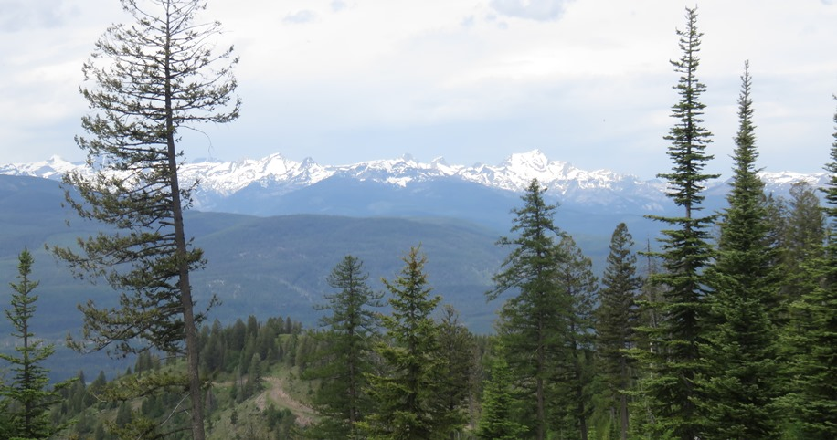
Some really tough sections. Walking on this stuff

Single track along a ledge
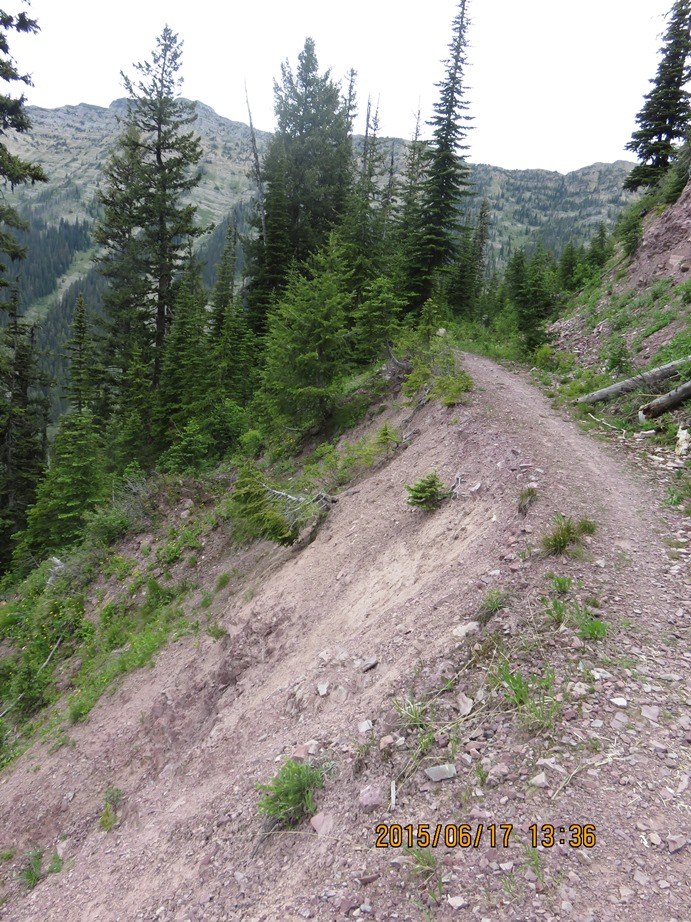
On top of Richmond Peak. Looking south
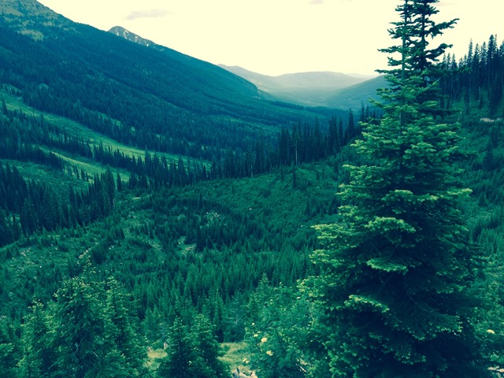
Your going slow when a butterfly lands on your bike
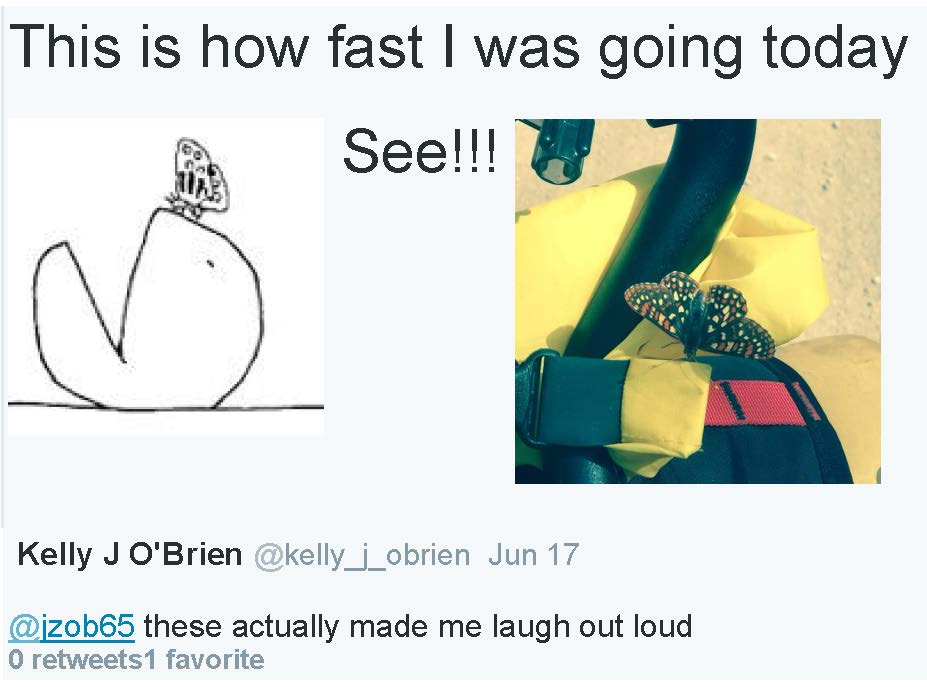
Kathy at the Blackfoot Angler takes your picture when you get to Ovando
Lost my sunglasses on the way but resupplied here
Fuel for the ride

Day 10 - Big climbing day
Walk the last pass - camp when it gets dark
6:55 AM, 15h10m, 86.70 miles, 8,000 ft of climbing


Day 11 - Helena and a rest day on N. Davis St
Trail magic, great breakfast, like new tires and a derailleur-hanger
5:57am, 1h 6m, 15.9 miles, 262 ft of climbing


Day 12 - Rocks, Roots and Missed Buses
Paying for wrong turns
6:56 AM 13h 54m 80.0mi 7,970ft of climbing
Two hours of climbing and then caught from behind

A couple major climbs before lunch
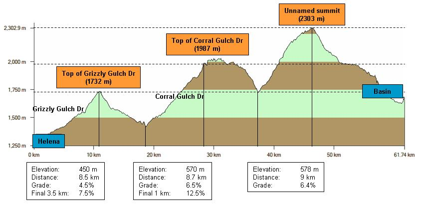
Many of the climbs were like this

Helena to Basin, Montana was a real struggle
Cursing the TD - This is not a bike path but ...
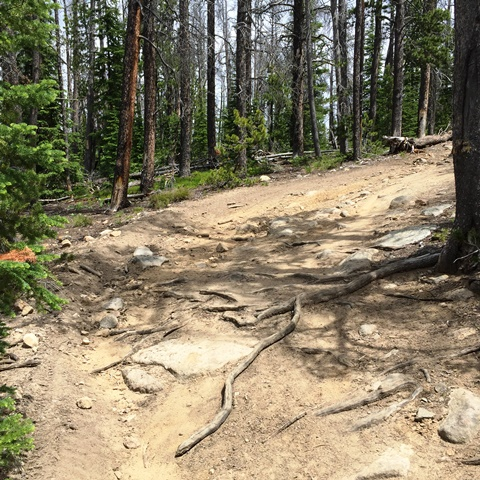
Hard to describe how hard it is to push a 50 lbs bike over this terrain.
I was so happy to be going down I turned left instead of right.
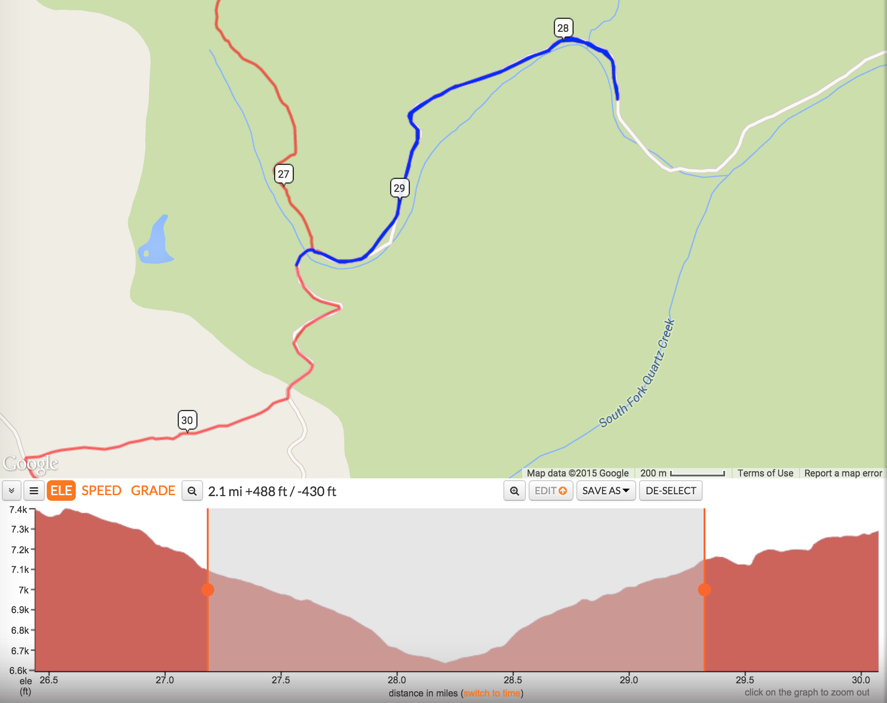
This was a low point - walking back up took over an hour
After getting to Basin the ride smoothed out.
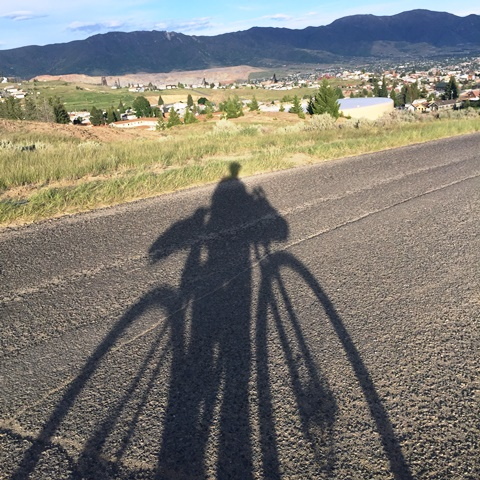
Butte from the north toward the end of a long day.
Day 13 - Rerouting to Jim's Tour Divide
Chocolate Milk at Great Divide Outfitters
8:45 AM, 8h 57m, 50.60 miles, 2,960 ft of climbing
Campground on CD. I stopped for lunch and a break.

This road down to I15 was a white knuckle ride

Rerouting to "Jim's Tour Divide". 1st stop-this tackle shop.

Off the track but finding Great Divide Outfitters and free chocolate milk
Riding into the wind trying to beat the rain. 1st rain clouds I had seen in Montana.

Road to Wise River
New Objective - Ride from Banff Alberta to across the Mexico border.

Day 14 - Stretching it out and covering ground
What about this road by the reservoir?
6:23am, 11h 21m, 105 miles, 4,188 ft of climbing
A long gradual climb to headwaters. Once there the meadows went on for miles

Following the Wise River to it's source
Great clouds up on top
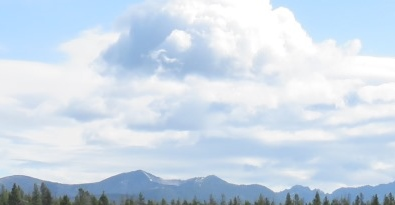
Pioneer Moutains - Some great views to the west with some of the moutains topping 10,000 feet.
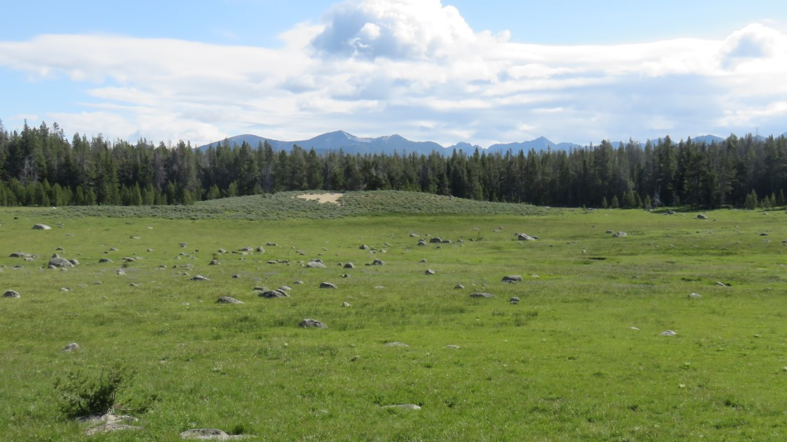
Stopping for a rest on the way down. Met some nice gents from southern Idaho
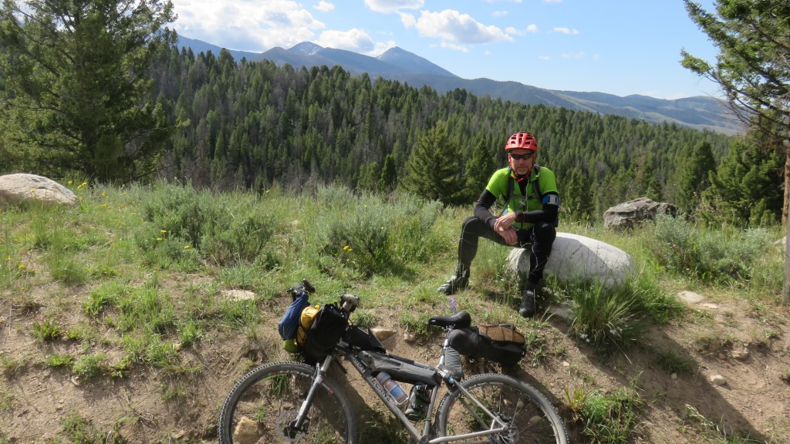
The road rambled on here for quite a while. Some paved and some gravel. Generally an easy ride.
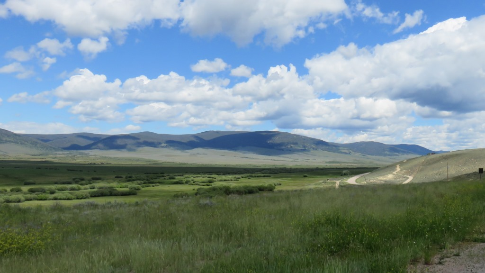
I would see these guys for the next 10 days.
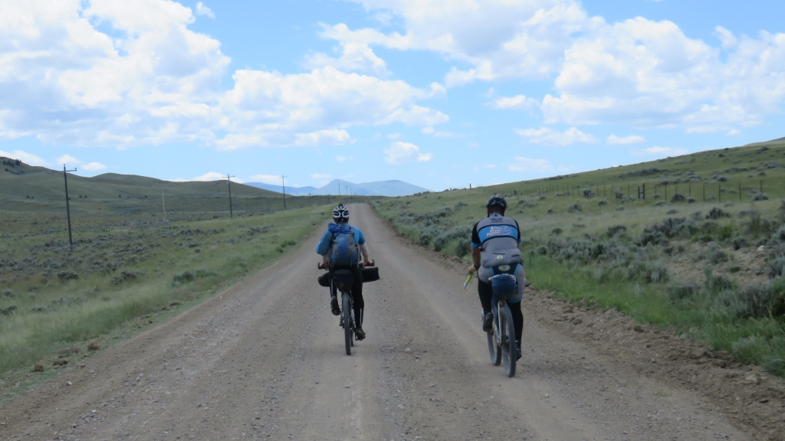
Stopped in Dell, MT. Very hot in the afternoon but only 7 miles to go
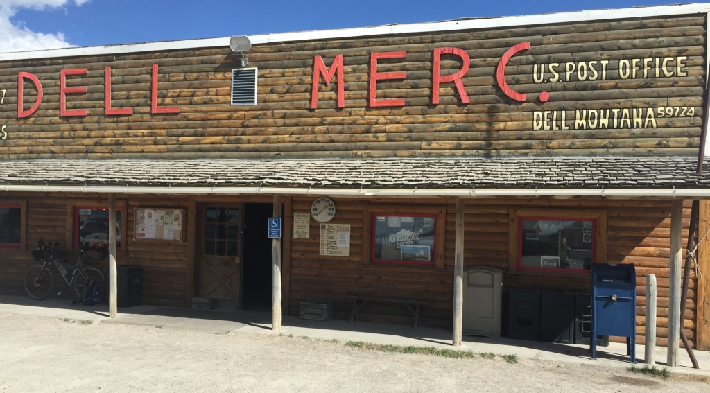
Best sunset - Lima, MT. 105 miles longest day so far.
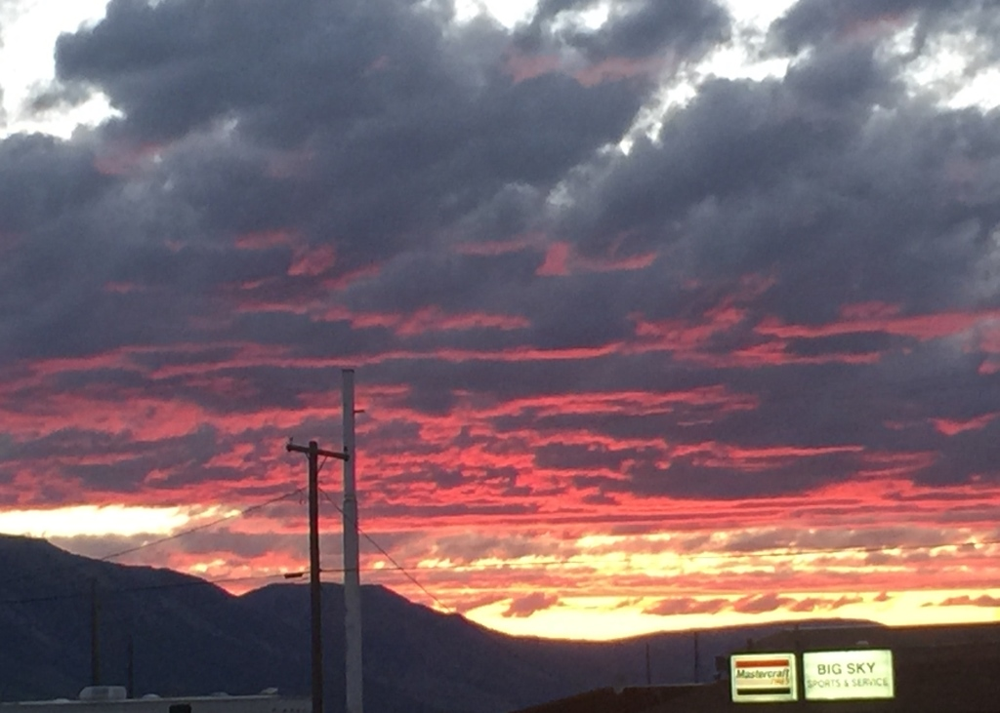